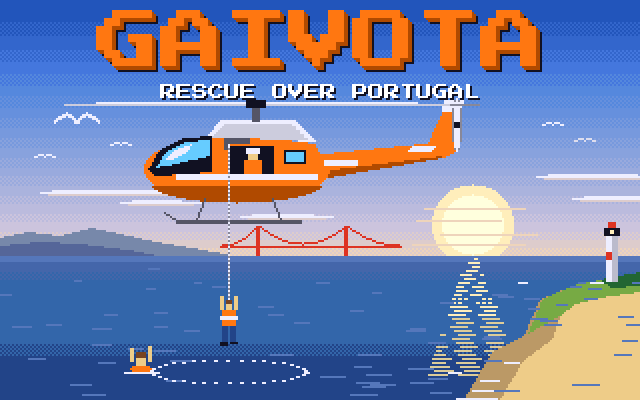
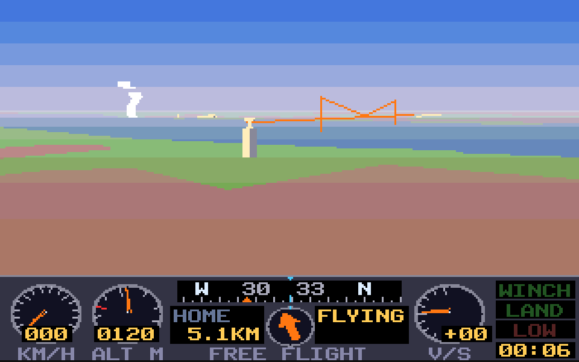
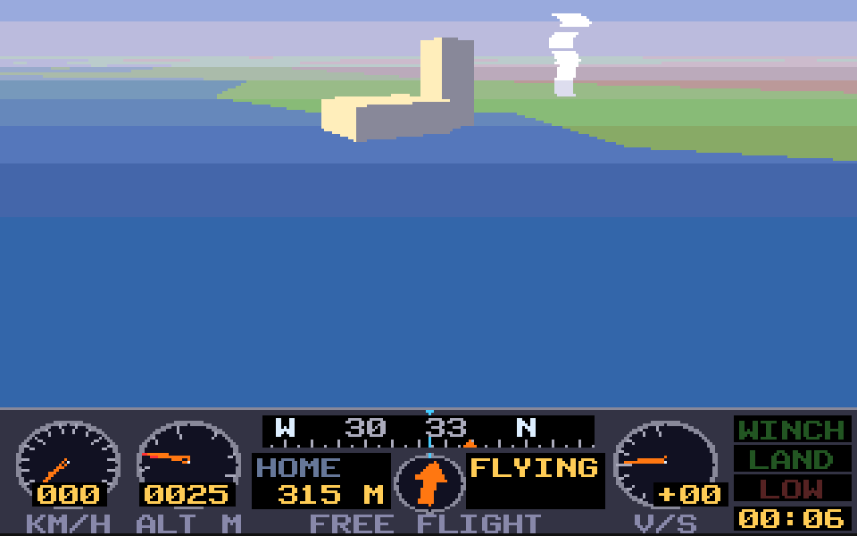
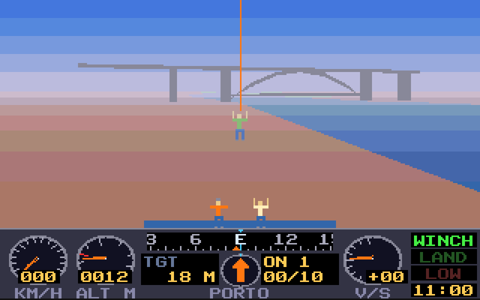
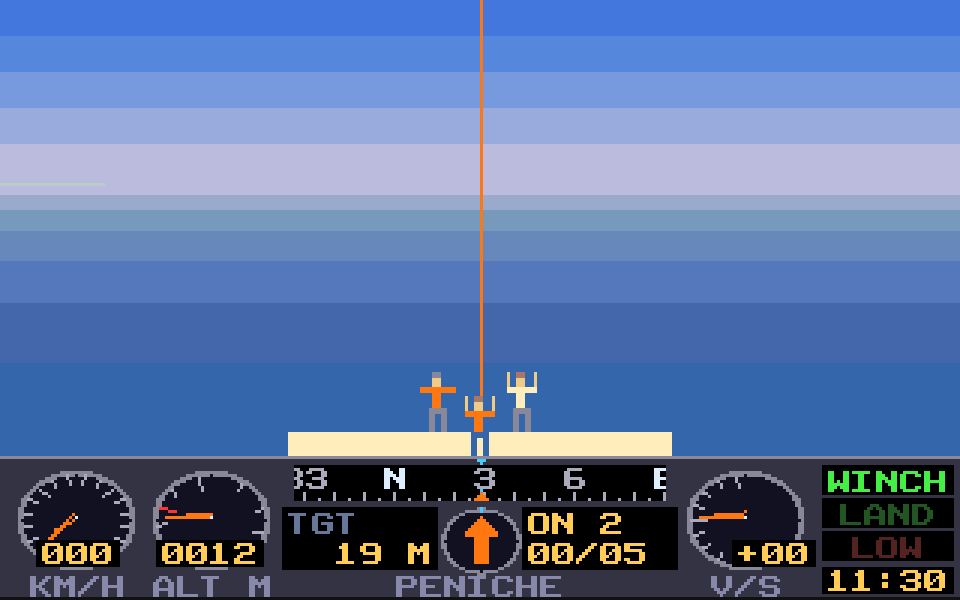

APPLE IIGSHelicopter rescue8 MB

FLY LOW. BRING THEM HOME.
Six missions over a real map of Portugal.
 The rescuesFire, flood, surf and a sinking boat
The rescuesFire, flood, surf and a sinking boat
The country300 by 600 km, coast to border
The landmarksBridges and towers, solid
© 2026 Walter Tengler65816 assembly · Ensoniq soundHard disk
ALL OF PORTUGAL
UNDER YOUR ROTOR
You fly GAIVOTA, the seagull: a rescue helicopter with six seats and a winch. Surfers off Nazaré, a crew off Peniche, families on Porto's roofs — hover low and slow, winch them aboard and land them softly at the base.

Porto: winching off the roofs Lisbon: the Ponte 25 de Abril
Lisbon: the Ponte 25 de Abril
Peniche: the crew on deck The Douro and the Ponte da Arrábida
The Douro and the Ponte da Arrábida
Rescue
Five rescues, four against the clock: fire at Leiria, flood in Porto, the big waves of Nazaré, a sinking boat off Peniche.
Fly
A helicopter that pitches and banks, a full instrument panel, and free flight from the Minho to the Algarve.
Explore
Coast, rivers, forests and towns from real map data. Fly under the bridges of Lisbon and Porto — if you dare.
IN THE BOXfilled 3D in real time · five rescues and free flight · eleven landmarks · best times
ALSOan original synthwave soundtrack, rotor and winch, all on the Ensoniq chip. Map data © OpenStreetMap contributors
YOU NEEDan Apple IIgs with 8 MB of memory, a hard disk and an accelerator (16 MHz is best) — or an emulator such as MAME
© 2026 Walter TenglerWritten in 65816 assemblyportwally.github.io